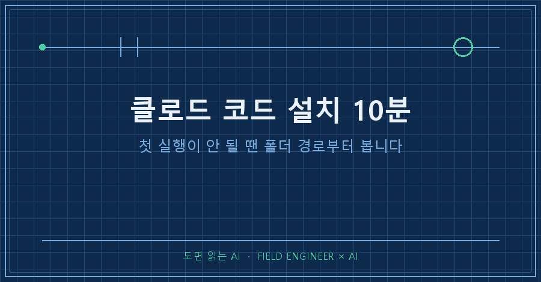
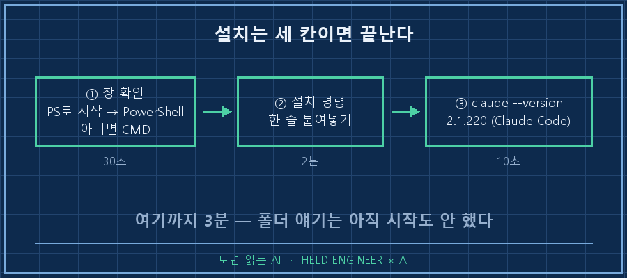
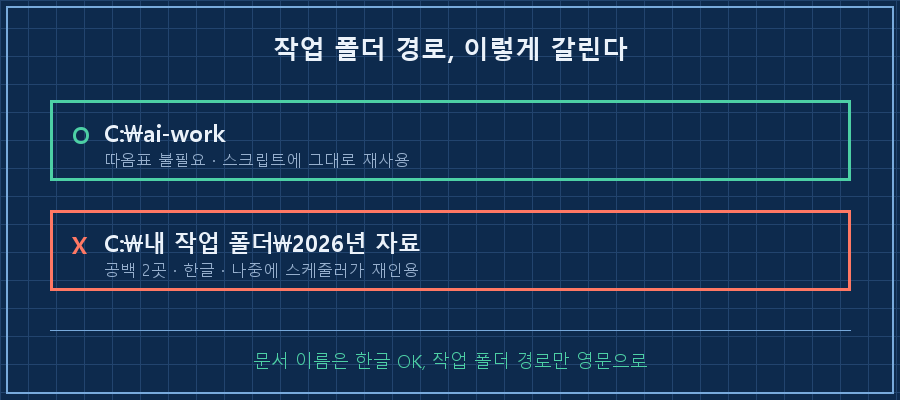
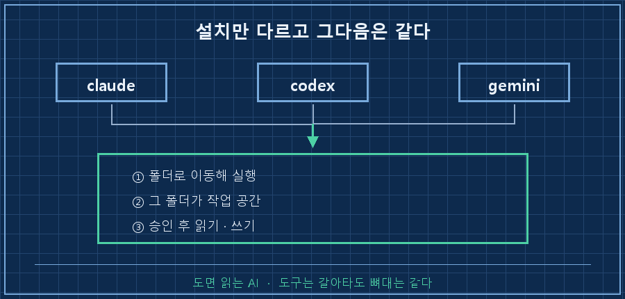

클로드 코드 설치는 명령 한 줄이면 끝납니다. 10분 중 9분은 "어느 창에서 치느냐"와 "어느 폴더에서 실행하느냐"에 쓰여요. 비개발자가 미끄러지는 자리도 정확히 이 둘입니다.
지난 편에서는 채팅창과 CLI 에이전트의 차이가 결국 내 파일에 손이 닿느냐라는 데까지 봤어요. 이번엔 그 손을 실제로 내 PC에 붙입니다.
제조 현장 설비 제어를 15년째 하고 있고 전공은 개발이 아닙니다. 터미널도 필요할 때만 겨우 열던 사람이에요. 그러니 검은 창 처음 여는 분 기준으로만 씁니다. 2026년 9월 기준이고요.
| 항목 | 값 |
|---|---|
| OS | Windows 10(1809 이상)·11, macOS 13 이상, 리눅스 |
| 하드웨어 | RAM 4GB 이상 |
| 계정 | 해당 서비스 유료 구독 또는 API 제공사 계정 (무료 웹 플랜엔 미포함) |
| 걸리는 시간 | 설치 2분, 확인 1분, 첫 명령 7분 |
| 필요 없는 것 | 프로그래밍 지식, 관리자 권한 |
관리자 권한이 필요 없다는 건 공식 문서에 명시돼 있어요. 회사 PC라 막힐까 걱정하셨다면 일단 한 번 쳐보셔도 됩니다.
1. 창부터 제대로 열어야 설치가 됩니다
Windows에는 검은 창이 두 종류 있고 설치 명령이 서로 다릅니다. PowerShell과 CMD예요. 여기서 반쯤 갈립니다.
구분법은 맨 앞 글자예요. PS C:\Users\...> 처럼 PS로 시작하면 PowerShell, C:\Users\...> 면 CMD입니다.
PowerShell이면 이 한 줄.
irm https://claude.ai/install.ps1 | iexCMD면 이 한 줄이고요.
curl -fsSL https://claude.ai/install.cmd -o install.cmd && install.cmd && del install.cmd창을 헷갈리면 에러가 대신 알려줘요. 워낙 흔해서 공식 문서가 이 두 문구를 창 판별 신호로 안내할 정도입니다.
The token '&&' is not a valid statement separator
→ CMD용 명령을 PowerShell에 친 경우
'irm' is not recognized as an internal or external command
→ PowerShell용 명령을 CMD에 친 경우저는 winget으로 깔았어요.
winget install Anthropic.ClaudeCode다만 winget은 자동 업데이트가 안 돼서 가끔 winget upgrade Anthropic.ClaudeCode를 직접 쳐줘야 해요. 위 스크립트로 깔면 알아서 올라갑니다.
확인은 한 줄입니다.
> claude --version
2.1.220 (Claude Code)제 PC에서 방금 찍은 그대로예요. 버전 숫자가 나오면 끝입니다.

2. 폴더를 정하는 건 권한을 정하는 일이에요
CLI 에이전트는 실행한 그 폴더를 작업 공간으로 잡습니다. 어디서 실행하느냐가 곧 어디까지 건드려도 되는지를 정하는 일이에요.
그래서 바탕화면이나 사용자 폴더에서 그냥 실행하면 안 됩니다. 연습용 폴더를 하나 새로 파세요. 세 줄이면 돼요.
mkdir C:\ai-work
cd C:\ai-work
claudemkdir은 폴더 만들기, cd는 이동, claude는 실행. 외울 건 이게 전부예요. 맥·리눅스면 mkdir ~/ai-work 로 바꾸시면 됩니다. 처음 한 번은 로그인이 뜨는데, 브라우저에서 계정 승인하면 그다음부턴 안 물어봐요.
폴더 이름을 굳이 ai-work로 쓴 이유는 4장에 나와요. 결론만 먼저 말하면 영문·소문자에 공백 없이 짓는 게 제일 편합니다.

3. 첫 명령 세 개로 읽기·쓰기·되돌리기를 다 봅니다
첫 명령은 성능 시험이 아니라 연결 확인이에요. 쓰기 한 번, 읽기 한 번, 지우기 한 번이면 이 도구가 뭘 할 수 있는지 다 보입니다. 이제 그냥 한국어로 말하면 돼요.
> 여기에 test.txt 만들고 안에 오늘 날짜 한 줄 써줘
> 방금 만든 파일 열어서 뭐라고 썼는지 보여줘
> test.txt 지워줘이때 바로 실행되진 않아요. 명령마다 승인 화면이 한 번씩 뜨고, 허용을 눌러야 탐색기에 파일이 생깁니다. 이게 안전장치예요. 그래서 "항상 허용"을 습관적으로 누르지 마세요. 특히 삭제는요.
시간대별로 뭘 보고 통과를 판정할지 정리하면 이렇습니다.
| 시각 | 할 일 | 통과 판정 |
|---|---|---|
| 0~2분 | 창 확인 후 설치 명령 한 줄 | 설치 완료 메시지 |
| 2~3분 | claude --version | 버전 숫자가 찍힘 |
| 3~4분 | mkdir → cd → claude | 시작 줄에 그 폴더 경로가 보임 |
| 4~6분 | 브라우저에서 계정 승인 | 입력창(>)이 뜸 |
| 6~9분 | 파일 만들기 명령 | 탐색기에 파일이 실제로 생김 |
| 9~10분 | 읽기·삭제 명령 | 승인 누른 것만 반영됨 |
6분 칸이 진짜 관문이에요. 화면에 답이 그럴듯하게 뜨는 것과 파일이 실제로 생기는 것은 다른 일이거든요. 탐색기를 열어 눈으로 확인하고 넘어가세요.
4. 저는 여기서 미끄러졌어요 — 한글과 공백
오해부터 풀고 갈게요. 한글 폴더 이름 자체는 요즘 잘 돌아갑니다. 깨지는 건 그다음, 자동화를 붙이는 순간이에요.
제 작업 폴더 중엔 한글과 공백이 섞인 이름이 그냥 있는데, 오늘 확인해보니 에이전트가 그 안 항목 16개를 멀쩡히 읽어요. 제가 넘어진 자리는 따로 세 군데였습니다.
하나, 공백은 따옴표가 없으면 경로가 쪼개집니다. 오늘 임시 폴더로 그대로 재현해본 겁니다.
PS C:\> cd C:\WorkClaude\My Work Folder
A positional parameter cannot be found that accepts argument 'Work'.My Work Folder가 세 조각으로 읽힌 거예요. 따옴표 한 쌍이면 되는데, 매번 기억하느니 애초에 공백을 안 넣는 쪽이 낫더라고요.
둘, 한글 주석 한 줄이 새벽 자동 실행을 멈춰 세웠습니다. 4월에 개인적으로 돌리던 리포트가 매일 새벽 에러 창을 띄웠어요.
'由?釉뚮━??'은(는) 내부 또는 외부 명령, 실행할 수 있는 프로그램,
또는 배치 파일이 아닙니다.저 외계어가 원래는 제가 달아둔 한글 주석이었어요. UTF-8로 저장한 한글을 명령 창이 옛날 한국어 코드(CP949)로 읽으며 깨졌고, 그 깨진 글자를 명령어로 착각한 겁니다. 주석인데 말이죠..
같은 형식 파일을 전부 뒤져 13개 중 11개를 고쳤어요. 규칙은 두 줄. 실행 파일 안엔 한글 주석을 안 쓴다, 맨 위에 chcp 65001 > nul 로 창을 UTF-8로 맞춘다.
셋, 한글이 한 글자만 조용히 사라지기도 합니다. 명령줄에 한글을 직접 실어 보냈다가 "프로세스"가 "프로세"로 등록된 적이 있어요. '세' 한 글자가 공백 세 개로 바뀌었는데 에러도 안 납니다. 그냥 틀린 채로 저장돼요..
| 어디서 | 증상 | 대책 |
|---|---|---|
| 경로에 공백 | 경로가 쪼개져 인식 실패 | 따옴표로 감싸거나 공백 없는 이름 |
| 실행 파일 속 한글 | 깨진 글자를 명령어로 인식 | 한글 주석 금지 + chcp 65001 > nul |
| 명령줄에 실은 한글 | 글자가 조용히 사라짐 | 한글은 파일에 담아 넘기기 |
덤으로 하나 더. 어떤 데선 2026년_5월, 어떤 데선 2026년 5월로 쓰다가 같은 달 자료가 두 폴더로 갈라진 적도 있어요. 언더바 하나 차이로 23개 파일을 손으로 합쳤습니다.
그래서 클로드 코드 설치 단계의 제 권고는 단순해요. 읽고 쓸 문서 이름은 한글이어도 됩니다. 다만 작업 폴더 경로만큼은 영문·소문자·공백 없이 가세요. 경로는 스크립트와 스케줄러가 계속 재인용하는 자리라, 한 번 지뢰를 심으면 몇 달 뒤에 터집니다.
5. 설치할 때 많이 걸리는 질문 셋
Q. 설치는 끝났다는데 claude를 치면 없는 명령이래요.
대부분 창이 아직 모르는 상태예요. 터미널을 닫았다 새로 열면 해결됩니다. 그래도 안 되면 claude doctor가 설치 상태만 읽기 전용으로 진단해줘요.
Q. 폴더를 잘못 잡고 실행했는데 뭐가 바뀐 건 아닐까요?
승인을 안 눌렀다면 아무것도 안 바뀝니다. 읽기·쓰기·실행 전부 승인을 거치거든요. 창을 닫고 제대로 된 폴더에서 다시 실행하면 돼요.
Q. npm으로 깔라는 글도 있던데 뭐가 맞나요?
둘 다 됩니다. npm 방식은 npm install -g @anthropic-ai/claude-code 인데 Node.js 22 이상이 필요해요. 참고로 공식 문서는 sudo를 붙인 전역 설치를 경고합니다. 권한·보안 문제가 생겨요.
6. GPT·Gemini CLI도 세 줄은 똑같습니다
이 연재는 Claude Code로 설명하지만 도구 고르는 얘기는 아니에요. 주요 CLI 에이전트 셋은 골격이 같습니다.
| 도구 | 설치 | 실행 |
|---|---|---|
| Claude Code | irm https://claude.ai/install.ps1 \| iex (Windows PowerShell) | claude |
| Codex CLI | npm install -g @openai/codex | codex |
| Gemini CLI | npm install -g @google/gemini-cli | gemini |
설치 방식만 다르고 그다음은 전부 같아요. 폴더로 이동해 실행하고, 그 폴더가 작업 공간이 되고, 승인을 거쳐 파일을 읽고 씁니다. Gemini CLI는 npx @google/gemini-cli 로 설치 없이 띄워볼 수도 있고요. 2장에서 판 ai-work 폴더는 도구를 갈아타도 그대로 씁니다.

오늘 남길 건 명령 몇 개가 아니라 순서 하나예요. 창 확인 → 폴더 지정 → 첫 명령. 폴더 이름은 꼭 영문으로 하시고요. 혹시 예전에 깔았다가 터미널 앞에서 막막해 덮어두신 적 있으신가요? 저도 그랬는데, 막혔던 게 도구가 아니라 폴더였더라고요!
다음 편은 이 폴더에 첫 자동화를 걸어봅니다. "이 폴더 정리해줘" 한 줄로 시작하는데, 시키지도 않은 파일까지 건드렸던 얘기부터 하려고요.
연재에서 만드는 폴더 구조와 규칙 파일은 makefield.ai에 순서대로 모아둡니다. 블로그는 한 편씩, 거기는 통째로요.
태그: #클로드코드설치 #ClaudeCode설치 #클로드코드 #CLIAI에이전트 #ClaudeCode첫실행 #터미널AI설치 #한글경로오류 #윈도우터미널 #PowerShell설치 #CodexCLI #GeminiCLI #비개발자AI #AI자동화구축 #현장엔지니어AI #도면읽는AI